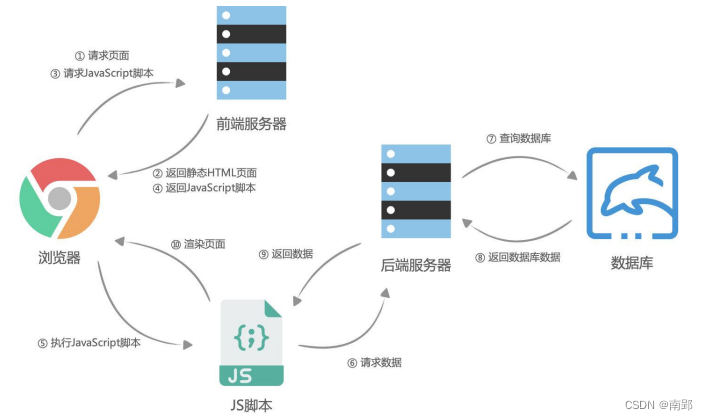

一、服务端渲染和前后端分离
1. 服务器端渲染
早期的网页都是通过后端渲染来完成的：服务器端渲染：
- 客户端发出请求 -> 服务端接收请求并返回相应HTML文档 -> 页面刷新，客户端加载新的HTML文档；
==服务器端渲染的缺点：== - 当用户点击页面中的某个按钮向服务器发送请求时，页面本质上只是一些数据发生了变化，而此时服务器却要将重绘的整个页面再返回给浏览器加载，这显然有悖于程序员的“DRY（ Don‘t repeat yourself ）”原则
- 而且明明只是一些数据的变化却迫使服务器要返回整个HTML文档，这本身也会给网络带宽带来不必要的开销

2. 前后端分离
AJAX是“Asynchronous JavaScript And XML”的缩写(异步的JavaScript和XML)，是一种实现无页面刷新、获取服务器数据的技术。
AJAX最吸引人的就是它的“异步”特性，也就是说它可以==在不重新刷新页面的情况下**与服务器通信，交换数据，或更新页面==**。
你可以使用AJAX最主要的两个特性做下列事：
- 在不重新加载页面的情况下发送请求给服务器；
- 接受并使用从服务器发来的数据。

二、HTTP协议
1. HTTP 的介绍
HTTP是一个客户端（用户）和服务端（网站）之间请求和响应的标准。
- 通过使用网页浏览器、网络爬虫或者其它的工具，客户端发起一个HTTP请求到服务器上指定端口（默认端口为80）；
- 我们称这个客户端为用户代理程序（user agent）
- 响应的服务器上存储着一些资源，比如HTML文件和图像。
- 我们称这个响应服务器为源服务器（origin server）
我们网页中的资源通常是被放在Web资源服务器中，由浏览器自动发送HTTP请求来获取、解析、展示的。
2. HTTP 的组成
一次HTTP请求主要包括：
==请求request==
- 请求行
- 请求头
- 请求体
==响应response==
- 响应行
- 响应头
- 响应体
2.1 HTTP 版本
2.2 HTTP 请求方式
在RFC中定义了一组请求方式，来表示要对给定资源执行的操作：
- ==GET==：GET 方法请求一个指定资源的表示形式，使用 GET 的请求应该只被用于获取数据。
- ==HEAD==：HEAD 方法请求一个与 GET 请求的响应相同的响应，但没有响应体。
- 比如在准备下载一个文件前，先获取文件的大小，再决定是否进行下载；
- ==POST==：POST 方法用于将实体提交到指定的资源。
- ==PUT==：PUT 方法用请求有效载荷（payload）替换目标资源的所有当前表示；
- ==DELETE==：DELETE 方法删除指定的资源；
- ==PATCH==：PATCH 方法用于对应资源部分修改；
- ==CONNECT==：CONNECT 方法建立一个到目标资源标识的服务器的隧道，通常用在代理服务器，网页开发很少用到。
- ==TRACE==：TRACE 方法沿着到目标资源的路径执行一个消息环回测试。
在开发中使用最多的是GET、POST请求；在后续的后台管理项目中，我们也会使用PATCH、DELETE请求
2.3 HTTP 请求 header 相关
Content-type 是这次请求携带的数据的类型：
application/x-www-form-urlencoded：表示数据被编码成以 ‘&’ 分隔的键 - 值对，同时以 ‘=’ 分隔键和值application/json：表示是一个json类型text/plain：表示是文本类型application/xml：表示是xml类型multipart/form-data：表示是上传文件
Content-length：文件的大小长度
keep-alive：
- http是基于TCP协议的，但是通常在进行一次请求和响应结束后会立刻中断
- 在http1.0中，如果想要继续保持连接：
- 浏览器需要在请求头中添加 connection: keep-alive；
- 服务器需要在响应头中添加 connection:keey-alive；
- 当客户端再次放请求时，就会使用同一个连接，直接一方中断连接
- 在http1.1中，所有连接默认是 connection: keep-alive的；
- 不同的Web服务器会有不同的保持 keep-alive的时间；
- Node中默认是5s中
accept-encoding：告知服务器，客户端支持的文件==压缩==格式，比如js文件可以使用gzip编码，对应 .gz文件
accept：告知服务器，客户端可接受文件的格式类型
user-agent：客户端相关的信息
2.4 HTTP 响应状态码
Http状态码（Http Status Code）是用来表示Http响应状态的数字代码：
| 常见HTTP状态码 | 状态描述 | 信息说明 |
|---|---|---|
| 200 | OK | 客户端请求成功 |
| 201 | Created | POST请求，创建新的资源 |
| 301 | Moved Permanently | 请求资源的URL已经修改，响应中会给出新的URL |
| 400 | Bad Request | 客户端的错误，服务器无法或者不进行处理 |
| 401 | Unauthorized | 未授权的错误，必须携带请求的身份信息 |
| 403 | Forbidden | 客户端没有权限访问，被拒接 |
| 404 | Not Found | 服务器找不到请求的资源。 |
| 500 | Internal Server Error | 服务器遇到了不知道如何处理的情况。 |
| 503 | Service Unavailable | 服务器不可用，可能处理维护或者重载状态，暂时无法访问 |
三、XMLHttpRequest
1. XHR 发送请求的基本过程
第一步：创建网络请求的AJAX对象（使用XMLHttpRequest）
第二步：监听XMLHttpRequest对象状态的变化，或者监听onload事件（请求完成时触发）
第三步：配置网络请求（通过open方法）
第四步：发送send网络请求
// 1.创建XMLHttpRequest对象
const xhr = new XMLHttpRequest()
// 2.监听状态的改变(宏任务)
xhr.onreadystatechange = function () {
if (xhr.readyState !== XMLHttpRequest.DONE) return
const resJSON = JSON.parse(xhr.response)
console.log(resJSON);
}
// 3.配置请求open
// method: 请求的方式(get/post/delete/put/patch...)
// url: 请求的地址
xhr.open('get', "http://123.207.32.32:8000/home/multidata")
// 4.发送请求(浏览器帮助发送对应请求)
xhr.send()2. 事件监听
2.1 事件监听 onreadystatechange
我们在一次网络请求中看到状态发生了很多次变化，这是因为对于一次请求来说包括如下的状态：
注意（这个状态并非是HTTP的相应状态，而是记录的XMLHttpRequest对象的状态变化。）
| 值 | 状态 | 描述 |
|---|---|---|
| 0 | UNSENT | 代理被创建，但尚未调用 open() 方法。 |
| 1 | OPENED | open() 方法已经被调用。 |
| 2 | HEADERS_RECEIVED | send() 方法已经被调用，并且头部和状态已经可获得。 |
| 3 | LOADING | 下载中；responseText 属性已经包含部分数据。 |
| 4 | DONE | 下载操作已完成。 |
若想发送同步请求：将open的第三个参数设置为false
const xhr = new XMLHttpRequest()
xhr.open('get', "http://123.207.32.32:8000/home/multidata", false)
xhr.send()
console.log(xhr.response)
console.log('-----------');
console.log('+++++++++++'); // 这两个输出在xhr.response打印之后再打印，不会提前打印2.2 其他事件监听
除了onreadystatechange还有其他的事件可以监听
- loadstart：请求开始。
- progress： 一个响应数据包到达，此时整个 response body 都在 response 中。
- abort：调用 xhr.abort() 取消了请求。
- error：发生连接错误，例如，域错误。不会发生诸如 404 这类的 HTTP 错误。
- load：请求成功完成。
- timeout：由于请求超时而取消了该请求（仅发生在设置了 timeout 的情况下）。
- loadend：在 load，error，timeout 或 abort 之后触发。
3. 响应阶段
3.1 响应数据和响应类型
发送了请求后，我们需要获取对应的结果：response属性
通过responseType可以设置获取数据的类型
- 如果将 responseType 的值设置为空字符串，则会使用 text 作为默认值
// 1.
const xhr = new XMLHttpRequest()
// 2.onload监听数据加载完成
xhr.onload = function () {
console.log(xhr.response)
// 早期通常服务器返回的数据是普通的文本和XML，所以我们通常会通过responseText、 responseXML来获取响应结果；之后将它们转化成JavaScript对象形式；
// console.log(xhr.responseText)
// console.log(xhr.responseXML)
}
// 3.告知xhr获取到的数据的类型
// 目前服务器基本返回的都是json数据，直接设置为json即可
xhr.responseType = "json"
// xhr.responseType = "xml"
// 4.配置网络请求
// 4.1.json类型的接口
xhr.open("get", "http://123.207.32.32:1888/01_basic/hello_json")
// 4.2.text类型的接口
xhr.open("get", "http://123.207.32.32:1888/01_basic/hello_text")
// 4.3.xml类型的接口
xhr.open("get", "http://123.207.32.32:1888/01_basic/hello_xml")
// 5.发送网络请求
xhr.send()3.2 获取响应码
获取HTTP响应的网络状态，可以通过status和statusText来获取：
const xhr = new XMLHttpRequest()
// onload监听数据加载完成
xhr.onload = function () {
if (xhr.status >= 200 && xhr.status < 300) {
console.log(xhr.response);
} else {
console.log(xhr.status, xhr.statusText);
}
}
xhr.responseType = "json"
// xhr.open("get", "http://123.207.32.32:8000/home/multidata")
xhr.open("get", "http://123.207.32.32:8000/aaa/bbb")
xhr.send()4. 服务器传递参数
常见的传递给服务器数据的方式有如下几种：
- 方式一: GET请求的query参数
- 方式二: POST请求 x-www-form-urlencoded 格式
- 方式三: POST请求 FormData 格式
- 方式四: POST请求 JSON 格式
<form class="info">
<input type="text" name="username">
<input type="password" name="password">
</form>
<button class="send">发送请求</button>
<script>
const formEl = document.querySelector(".info")
const sendBtn = document.querySelector(".send")
sendBtn.onclick = function() {
// 创建xhr对象
const xhr = new XMLHttpRequest()
// 监听数据响应
xhr.onload = function() {
console.log(xhr.response)
}
// 配置请求
xhr.responseType = "json"
// 1.传递参数方式一: get -> query
xhr.open("get", "http://123.207.32.32:1888/02_param/get?name=why&age=18&address=广州市")
// 2.传递参数方式二: post -> urlencoded
xhr.open("post", "http://123.207.32.32:1888/02_param/posturl")
// 发送请求(请求体body)
xhr.setRequestHeader("Content-type", "application/x-www-form-urlencoded")
xhr.send("name=why&age=18&address=广州市")
// 3.传递参数方式三: post -> formdata
// 发送参数默认是FormData格式，所以不用声明Content-type
xhr.open("post", "http://123.207.32.32:1888/02_param/postform")
// formElement对象转成FormData对象
const formData = new FormData(formEl)
xhr.send(formData)
// 4.传递参数方式四: post -> json
xhr.open("post", "http://123.207.32.32:1888/02_param/postjson")
xhr.setRequestHeader("Content-type", "application/json")
xhr.send(JSON.stringify({name: "why", age: 18, height: 1.88}))
}
</script>5. ajax 的封装
function hyajax({
url,
method = "get",
data = {},
timeout = 10000,
headers = {}, // token
} = {}) {
// 1.创建对象
const xhr = new XMLHttpRequest()
// 2.创建Promise
const promise = new Promise((resolve, reject) => {
// 2.监听数据
xhr.onload = function() {
if (xhr.status >= 200 && xhr.status < 300) {
resolve(xhr.response)
} else {
reject({ status: xhr.status, message: xhr.statusText })
}
}
// 3.设置类型
xhr.responseType = "json"
xhr.timeout = timeout
// 4.open方法
if (method.toUpperCase() === "GET") {
const queryStrings = []
for (const key in data) {
queryStrings.push(`${key}=${data[key]}`)
}
url = url + "?" + queryStrings.join("&")
xhr.open(method, url)
xhr.send()
} else {
xhr.open(method, url)
xhr.setRequestHeader("Content-type", "application/json")
xhr.send(JSON.stringify(data))
}
})
promise.xhr = xhr
return promise
}
const promise = hyajax({
url: "http://123.207.32.32:1888/02_param/get",
data: {
username: "coderwhy",
password: "123456"
}
})
promise.then(res => {
console.log("res:", res)
}).catch(err => {
console.log("err:", err)
})6. 延迟时间 timeout 和取消请求
在网络请求的过程中，为了避免过长的时间服务器无法返回数据，通常我们会为请求设置一个超时时间：timeout。
- 当达到超时时间后依然没有获取到数据，那么这个请求会自动被取消掉
- 默认值为0，表示没有设置超时时间
我们也可以通过abort方法强制取消请求
<button>取消请求</button>
<script>
const xhr = new XMLHttpRequest()
xhr.onload = function () {
console.log(xhr.response)
}
xhr.responseType = "json"
// 1.超时时间的设置
xhr.ontimeout = function () {
console.log("请求过期: timeout")
}
// timeout: 浏览器达到过期时间还没有获取到对应的结果时, 取消本次请求
xhr.timeout = 3000
xhr.open("get", "http://123.207.32.32:1888/01_basic/timeout")
xhr.send()
// 2.手动取消结果
xhr.onabort = function () {
console.log("请求被取消");
}
const cancelBtn = document.querySelector("button")
cancelBtn.onclick = function () {
xhr.abort()
}
</script>四、Fetch
1. Fetch 基本使用
Fetch可以看做是早期的XMLHttpRequest的替代方案，它提供了一种更加现代的处理方案：
- 比如返回值是一个Promise，提供了一种更加优雅的处理结果方式
- 在请求发送成功时，调用resolve回调then；
- 在请求发送失败时，调用reject回调catch
- 不像XMLHttpRequest一样，所有的操作都在一个对象上
fetch函数的使用：
fetch(input, {method, headers, body})- input：定义要获取的资源地址，可以是一个URL字符串，也可以使用一个Request对象（实验性特性）类型
- init：其他初始化参数
- method: 请求使用的方法，如 GET、POST
- headers: 请求的头信息
- body: 请求的 body 信息
2. Fetch 数据的响应
Fetch的数据响应主要分为==两个阶段==：
阶段一：当服务器返回了响应（response）
- fetch 返回的 promise 就使用内建的 Response class 对象来对响应头进行解析；
- 在这个阶段，我们可以通过检查响应头，来检查 HTTP 状态以确定请求是否成功；
- 如果 fetch 无法建立一个 HTTP 请求，例如网络问题，亦或是请求的网址不存在，那么 promise 就会 reject；
- 异常的 HTTP 状态，例如 404 或 500，不会导致出现 error
我们可以在 response 的属性中看到 HTTP 状态： - status：HTTP 状态码，例如 200
- ok：布尔值，如果 HTTP 状态码为 200-299，则为 true
第二阶段，为了获取 response body，我们需要使用一个其他的方法调用。
- response.text() —— 读取 response，并以文本形式返回 response
- response.json() —— 将 response 解析为 JSON
3. Fetch GET/POST 请求
// 1.fetch发送get请求
// 1.1.未优化的代码
fetch("http://123.207.32.32:8000/home/multidata").then(res => {
// 1.获取到response
const response = res
// 2.获取具体的结果
response.json().then(res => {
console.log("res:", res)
})
}).catch(err => {
console.log("err:", err)
})
// 1.2. 优化方式一:
fetch("http://123.207.32.32:8000/home/multidata").then(res => {
// 1.获取到response
const response = res
// 2.获取具体的结果
return response.json()
}).then(res => {
console.log("res:", res)
}).catch(err => {
console.log("err:", err)
})
// 1.3. 优化方式二:
async function getData() {
const response = await fetch("http://123.207.32.32:8000/home/multidata")
const res = await response.json()
console.log("res:", res)
}
getData()// 2.post请求并且有参数
async function getData() {
// 1.常用内容传递
const response = await fetch("http://123.207.32.32:1888/02_param/postjson", {
method: "post",
headers: {
"Content-type": "application/json"
},
body: JSON.stringify({
name: "why",
age: 18
})
})
// 2.formData类型内容传递
const formData = new FormData()
formData.append("name", "why")
formData.append("age", 18)
const response = await fetch("http://123.207.32.32:1888/02_param/postform", {
method: "post",
body: formData
})
// 获取response状态
console.log(response.ok, response.status, response.statusText)
const res = await response.json()
console.log("res:", res)
}
getData()4. 文件上传
4.1 XMLHttpRequest 的文件上传
<input class="file" type="file">
<button class="upload">上传文件</button>
<script>
const uploadBtn = document.querySelector(".upload")
const fileEl = document.querySelector(".file")
uploadBtn.onclick = function () {
// 1.创建对象
const xhr = new XMLHttpRequest()
// 2.监听结果
xhr.onload = function () {
console.log(xhr.response)
}
xhr.onprogress = function (event) {
console.log(event)
}
xhr.responseType = "json"
xhr.open("post", "http://123.207.32.32:1888/02_param/upload")
//表单
const file = fileEl.files[0]
const formdata = new FormData()
formdata.append('avatar', file)
xhr.send(formdata)
}
</script>4.2 Fetch 的文件上传
<input class="file" type="file">
<button class="upload">上传文件</button>
<script>
const uploadBtn = document.querySelector(".upload")
const fileEl = document.querySelector(".file")
uploadBtn.onclick = async function() {
// 表单
const file = fileEl.files[0]
const formData = new FormData()
formData.append("avatar", file)
// 发送fetch请求
const response = await fetch("http://123.207.32.32:1888/02_param/upload", {
method: "post",
body: formData
})
const res = await response.json()
console.log("res:", res)
}
</script>